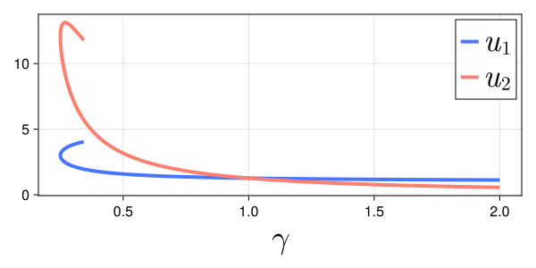

Pseudo-arclength continuation of equilibria of the FitzHugh-Nagumo model
In this example, we will prove the existence of a branch of equilibria of the FitzHugh-Nagumo model
\[\begin{cases} \displaystyle \frac{d}{dt} u(t) = f(u(t), \gamma) \bydef \begin{pmatrix} u_1(t)(u_1(t) - a)(1 - u_1(t)) - u_2(t) \\ \varepsilon(u_1(t) - \gamma u_2(t)) \end{pmatrix},\\ u(0) = u_0 \in \mathbb{R}^2, \end{cases}\]
where $a = 5$ and $\varepsilon = 1$.
The vector-field $f$ and its Jacobian, denoted $Df$, may be implemented as follows:
function f(u, γ)
a, ϵ = 5, 1
u₁, u₂ = u
return [u₁*(u₁ - a)*(1 - u₁) - u₂, ϵ*(u₁ - γ*u₂)]
end
function Dᵤf(u, γ)
a, ϵ = 5, 1
u₁, u₂ = u
return [a*(2u₁-1)+(2-3u₁)*u₁ -1
ϵ -ϵ*γ]
end
function ∂γf(u, γ)
a, ϵ = 5, 1
u₁, u₂ = u
return [0, -ϵ*u₂]
endWe use the pseudo-arclength continuation and retrieve a numerical approximation of the curve. By a contraction argument, we then prove that there exists a surrounding region that contains the desired curve.
In a nutshell, the pseudo-arclength continuation consists in computing a sequence of numerical zeros of $f$. Starting with an initial approximate zero $x_\text{init} \in \mathbb{R}^3$, we retrieve an approximate tangent vector $v$ to the curve at $x_\text{init}$ by looking at $\ker Df(x_\text{init})$. Then, our predictor for the next zero is set to $w \bydef x_\text{init} + \delta v$ where $\delta > 0$ represents the step size. The Newton's method is applied on the mapping $F_\text{Newton} : \mathbb{R}^3 \to \mathbb{R}^3$ given by
\[F_\text{Newton}(x) \bydef \begin{pmatrix} f(x) \\ (x - w) \cdot v \end{pmatrix}.\]
The mapping $F_\text{Newton}$ and its Jacobian may be implemented as follows:
import LinearAlgebra: ⋅
F(x, v, w) = [f(x[1:2], x[3]) ; (x - w) ⋅ v]
DF(x, v) = [Dᵤf(x[1:2], x[3]) ∂γf(x[1:2], x[3]) ; transpose(v)]Next, we perform Newton's method:
using RadiiPolynomial
import LinearAlgebra: nullspace
# initial point on the branch of equilibria
γ_init = 2.0
u_init = [1.1, 0.5]
u_init, success = newton(u -> (f(u, γ_init), Dᵤf(u, γ_init)), u_init)
# next point on the branch of equilibria
x_init = [u_init ; γ_init]
v = vec(nullspace([Dᵤf(x_init[1:2], x_init[3]) ∂γf(x_init[1:2], x_init[3])])) # initial tangent vector
δ = 5e-2 # step size
w = x_init + δ * v # predictor
x_final, success = newton(x -> (F(x, v, w), DF(x, v)), w)Newton's method: Inf-norm, tol = 1.0e-12, maxiter = 15
iteration |F(x)|
-------------------------------------
0 1.0000e-01 |DF(x)\F(x)| = 6.4865e-02
1 2.3601e-03 |DF(x)\F(x)| = 5.5823e-04
2 8.1376e-07 |DF(x)\F(x)| = 1.9261e-07
3 9.6700e-14
Newton's method: Inf-norm, tol = 1.0e-12, maxiter = 15
iteration |F(x)|
-------------------------------------
0 7.1482e-04 |DF(x)\F(x)| = 3.5180e-04
1 4.0697e-08 |DF(x)\F(x)| = 2.1450e-08
2 3.3307e-16Whenever Newton's method is successful, we proceed to the next iteration of the pseudo-arclength continuation by repeating the above strategy. Performing this sufficiently many times, we can construct an order $N$ polynomial approximation of the curve of zeros:
\[\bar{x}(s) \bydef \bar{x}_0 + 2 \sum_{n = 1}^N \bar{x}_n \phi_n (s), \qquad \text{for all } s \in [-1,1],\]
where $\phi_n$ are the Chebyshev polynomials of the first kind.
Define the mapping $F : \mathbb{R}^3 \times [-1,1] \to \mathbb{R}^3$ by
\[F(x, s) \bydef \begin{pmatrix} f(x) \\ (x - \bar{x}(s)) \cdot \bar{v}(s) \end{pmatrix},\]
and the fixed-point operator $T : \mathbb{R}^3 \times [-1,1] \to \mathbb{R}^3$ by
\[T(x, s) \bydef x - A(s) F(x, s),\]
where $A(s) : \mathbb{R}^3 \to \mathbb{R}^3$ is the injective operator corresponding to a numerical approximation of $D_x F(\bar{x}(s), s)^{-1}$ for all $s \in [-1, 1]$.
Let $R > 0$. We use a uniform version of the second-order Radii Polynomial Theorem (cf. Section Radii polynomial approach) such that we need to estimate $\|T(\bar{x}(s), s) - \bar{x}(s)\|_1$, $\|D_x T(\bar{x}(s), s)\|_1$ and $\sup_{x \in \text{cl}( B_R(\bar{x}(s)) )} \|D_x^2 T(x, s)\|_1$ for all $s \in [-1,1]$. In particular, we have
\[\|T(\bar{x}(s), s) - \bar{x}(s)\|_1 = \left\|A(s) \begin{pmatrix} f(\bar{x}(s)) \\ 0 \end{pmatrix} \right\|_1, \qquad \text{for all } s \in [-1,1].\]
The computer-assisted proof may be implemented as follows:
N = 700
N_fft = nextpow(2, 2N + 1)
npts = N_fft ÷ 2 + 1
arclength = 15.0
arclength_grid = [0.5 * arclength - 0.5 * cospi(2j/N_fft) * arclength for j ∈ 0:npts-1]
x_grid = Vector{Vector{Float64}}(undef, npts)
v_grid = Vector{Vector{Float64}}(undef, npts)
# initialize
direction = [0, 0, -1] # starts by decreasing the parameter
x_grid[1] = x_init
v_grid[1] = vec(nullspace([Dᵤf(x_grid[1][1:2], x_grid[1][3]) ∂γf(x_grid[1][1:2], x_grid[1][3])]))
if direction ⋅ v_grid[1] < 0 # enforce direction
v_grid[1] .*= -1
end
# run continuation scheme
for i ∈ 2:npts
δᵢ = arclength_grid[i] - arclength_grid[i-1]
wᵢ = x_grid[i-1] .+ δᵢ .* v_grid[i-1]
x, success = newton(x -> (F(x, v_grid[i-1], wᵢ), DF(x, v_grid[i-1])), wᵢ; verbose = true)
success || error()
x_grid[i] = x
v_grid[i] = vec(nullspace([Dᵤf(x_grid[i][1:2], x_grid[i][3]) ∂γf(x_grid[i][1:2], x_grid[i][3])]))
if v_grid[i-1] ⋅ v_grid[i] < 0 # keep the same direction
v_grid[i] .*= -1
end
end
# construct the approximations
grid2cheb(x_fft::Vector{<:Vector}, N) =
[rifft!(complex.(getindex.(x_fft, i)), Chebyshev(N)) for i ∈ eachindex(x_fft[1])]
grid2cheb(x_fft::Vector{<:Matrix}, N) =
[rifft!(complex.(getindex.(x_fft, i, j)), Chebyshev(N)) for i ∈ axes(x_fft[1], 1), j ∈ axes(x_fft[1], 2)]
x_fft = [reverse(x_grid) ; x_grid[begin+1:end-1]]
x̄ = map(x -> interval.(x), grid2cheb(x_fft, N))
v_fft = [reverse(v_grid) ; v_grid[begin+1:end-1]]
v̄ = map(v -> interval.(v), grid2cheb(v_fft, N))
A = map(A -> interval.(A), grid2cheb(inv.(DF.(x_fft, v_fft)), N))
# compute the bounds
function cheb2grid(x::VecOrMat{<:Sequence}, N_fft)
vals = fft.(x, N_fft)
return [real.(getindex.(vals, i)) for i ∈ eachindex(vals[1])]
end
# AF is a polynomial with respect to s of order 4N
N4 = 4N
N4_fft = nextpow(2, 2N4 + 1)
AF_fft = cheb2grid(A, N4_fft) .* F.(cheb2grid(x̄, N4_fft), cheb2grid(v̄, N4_fft), cheb2grid(x̄, N4_fft))
AF = grid2cheb(AF_fft, N4)
Y = norm(norm.(AF, 1), 1)
# ADF is a polynomial with respect to s of order 3N
N3 = 3N
N3_fft = nextpow(2, 2N3 + 1)
I_ADF_fft = [I] .- cheb2grid(A, N3_fft) .* DF.(cheb2grid(x̄, N3_fft), cheb2grid(v̄, N3_fft))
I_ADF = grid2cheb(I_ADF_fft, N3)
Z₁ = opnorm(norm.(I_ADF, 1), 1)
#
R = 1.2sup(Y)
a, ϵ = 5, 1
Z₂ = opnorm(norm.(A, 1), 1) * max(abs(2a + 2) + 6(norm(x̄[1], 1) + R) + abs(ϵ), abs(ϵ))
#
setdisplay(:full)
interval_of_existence(Y, Z₁, Z₂, R)Interval{Float64}(4.936506408781034e-9, 5.92165970751046e-9, com)_NGThe following figure[1] shows the numerical approximation of the proven branch of equilibria of the FitzHugh-Nagumo model.

- 1S. Danisch and J. Krumbiegel, Makie.jl: Flexible high-performance data visualization for Julia, Journal of Open Source Software, 6 (2021), 3349.